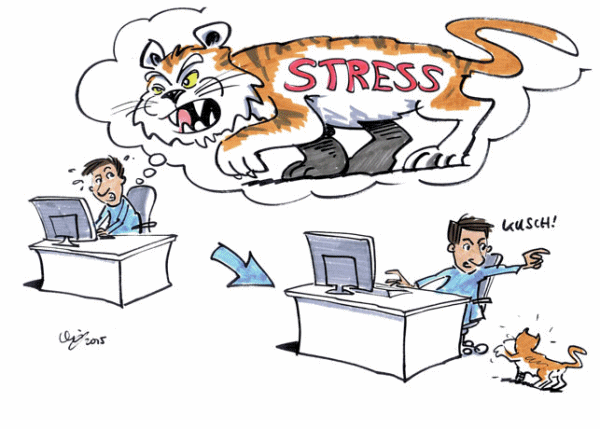
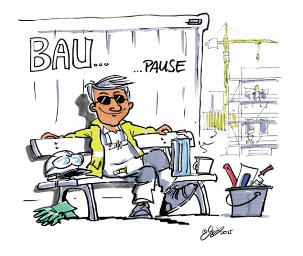

Stress ist eine uralte körperliche Reaktion des Menschen. In einer Gefahrensituation reagiert unser Organismus blitzschnell. Wir analysieren die Anforderungen der Situation und schätzen sie aufgrund unserer bisherigen Erfahrungen ein. Sind wir bisher mit ähnlichen Situationen gut zurechtgekommen, werden wir die aktuelle Lage als wenig belastend empfinden. In Stress kommen wir, wenn wir die Belastung nicht bewältigen können – oder glauben, dass wir die Herausforderung nicht bewältigen können. Schon der Gedanke "Ich schaffe das nicht" reicht dafür aus.
Unsere Einstellung zu uns selbst und zu unseren Fähigkeiten spielt dabei eine große Rolle. Auch unsere Erwartungen an uns selbst und an andere sind wichtig.
Viele Situationen können Stress auslösen, oft sind es die kleinen Ärgernisse und Anstrengungen des Alltags. Denken wir nur an den täglichen Arbeitsablauf auf der Baustelle, wenn Störungen, Verzögerungen und Hindernisse auftreten. Das kann an die Nerven gehen und negative Gefühle und Bewertungen verursachen: Ärger, Wut, Hilflosigkeit sind die Spitze des Eisbergs.
Alles was wir wahrnehmen und als Gefahr bewerten, führt zur Stressreaktion und den dazu passenden Gefühlen. Oft sind dafür Denkfehler und Gewohnheiten ausschlaggebend.
Wenn Unvorhergesehenes passiert, fällt die spontane Bewertung meistens negativ aus. Die Folge sind negative Gefühle.
Typische stressende Gedanken und Denkfehler sind:

PRAXISTIPPS
Gedanken können verändert werden, so kann es klappen:
Was nicht funktioniert:
Den stressenden Gedanken zu verdrängen. Dies führt zu einer noch stärkeren Konzentration auf den Gedanken. Versuchen Sie jetzt einmal nicht an einen rosaroten Elefanten zu denken. Sehen Sie, schon ist er da, der rosarote Elefant.
Herzrasen, Schweißausbrüche, zitternde Hände, Kopfschmerzen, Heißhunger oder gar keinen Hunger – Stress zeigt sich in unterschiedlichen Facetten. Nehmen Sie Ihre persönlichen Stress-Symptome ernst und achten Sie darauf, die innere Balance immer wieder zu finden.
Wer Wege kennt, sich selbst zu helfen, ist zuversichtlicher und erlebt weniger Stress.
Zu den persönlichen Schutzfaktoren gegen Stress gehören beispielsweise optimistisches Denken, eine Portion Humor und die Kontaktpflege zu anderen Menschen. Darüber hinaus ist es wichtig, Krisen und Misserfolge zu akzeptieren.
Geben Sie Ihrem Leben einen Sinn und sorgen Sie mit dem richtigen Zeitmanagement dafür, dass Sie in kleinen Schritten Ihre Ziele erreichen.
So geht es dem Stress an den Kragen.
PRAXISTIPPS
|
Weiterführende Informationen, Karten gegen Stress, Links zu Entspannungstechniken und vieles mehr finden Sie unter www.bgbau.de/ergonomie-bau/psychische_belastungen |
